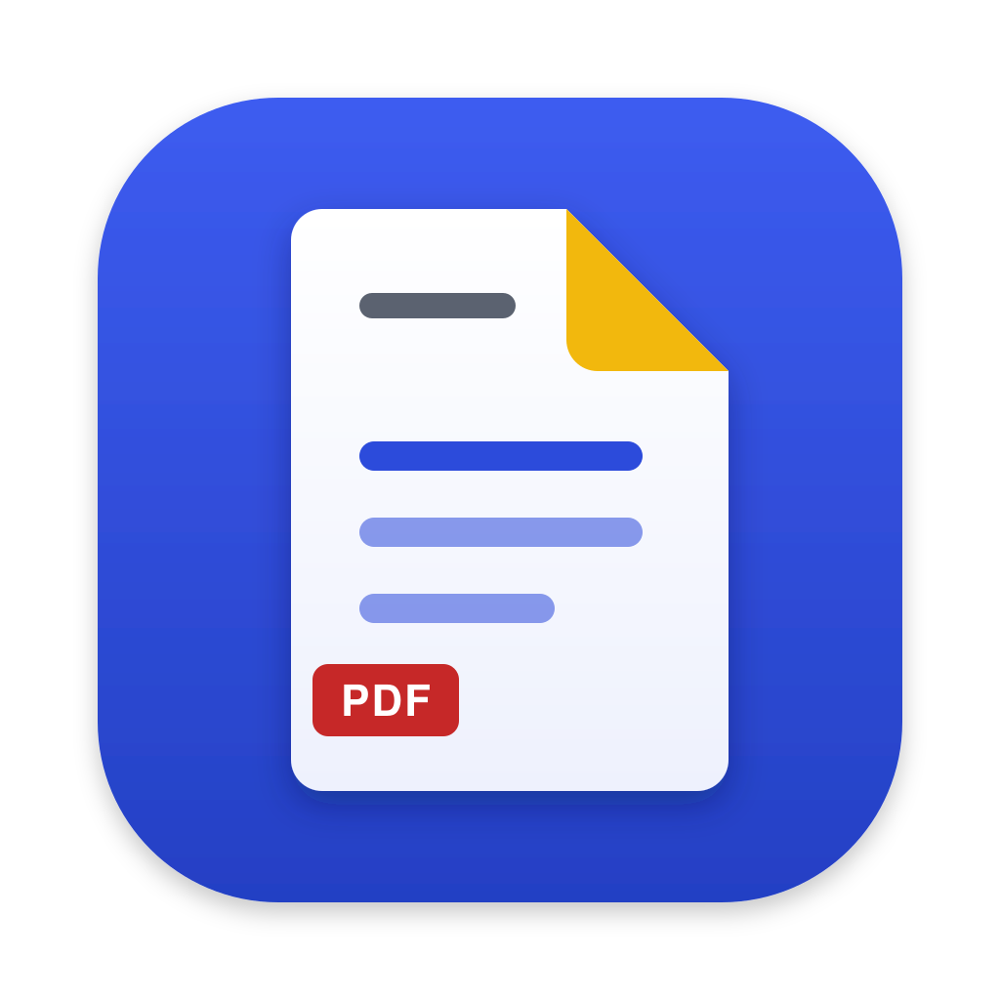

PDF 페이지 정리 · 변환 — 합치기, 나누기, 돌리기, 줄이기, 사진 ↔ PDF
받은 zip을 풀고 PaperROAD.app을 응용 프로그램 폴더로 옮겨요. 그래야 새 버전을 알아서 받을 수 있어요.
시스템 설정 → 개인정보 보호 및 보안 아래쪽의 "그래도 열기"를 눌러요. 한 번만 하면 다음부터는 그냥 열려요.
PDF를 Dock의 PaperROAD 아이콘 위에 떨어뜨려도 바로 열려요. 창을 닫아도 Dock에 남아 있어요.
여러 PDF를 넣고 페이지를 끌어서 순서를 정해요. 왼쪽 파일 목록을 끌면 파일째로 옮겨져요.
고른 페이지만 새 PDF로, 몇 쪽씩 · 범위(예: 1-3, 6, 8-)로 나누기, 전체나 고른 페이지를 JPG로 저장해요.
페이지를 누르면 돌리기 · 지우기 단추가 나와요. ⌘를 누른 채 누르면 여러 쪽을 함께 골라요.
가볍게 · 보통 · 강하게 중에서 고르면 줄어든 크기를 미리 보여 줘요. PDF를 JPG · PNG로도 바꿔요.
사진 · 스캔을 끌어서 순서를 정하고, 용지(사진 크기 · A4 · 레터) · 방향 · 여백을 골라 PDF 한 파일로 만들어요.